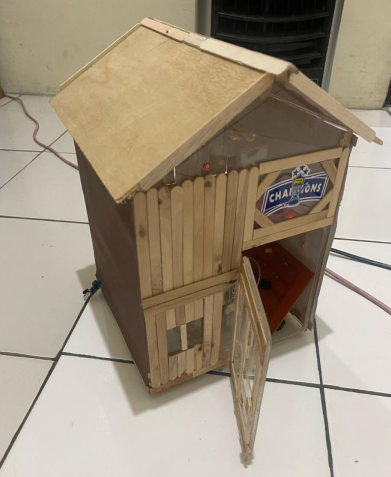

Project Overview
Sistem keamanan rumah berbasis Nuvoton NUC140 dengan dua titik sensor infrared dan photodiode untuk mendeteksi potensi intrusi.
02 / IOT SYSTEM
Sistem keamanan rumah berbasis Nuvoton NUC140 dengan dua titik sensor infrared dan photodiode untuk mendeteksi potensi intrusi.
Mendeteksi gangguan pada jalur pengawasan dan memberikan peringatan secara cepat melalui indikator visual dan suara.
Dual sensor detection, LED indicator, buzzer alarm, dan pemrosesan kondisi keamanan menggunakan Nuvoton NUC140.
Keil MDK

RESULTS